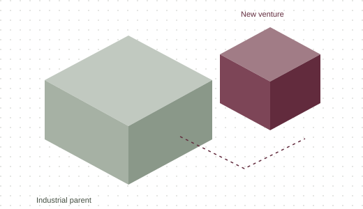

Venture CTO at McKinsey
A new business, from the ground up.
A digital business stood up alongside an industrial parent. One technical seat, held through the first build.
I have held the technical seat in a venture built next to a parent, and worked the boundary with the parent's CIO.
View the project